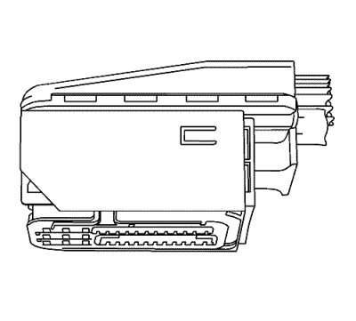
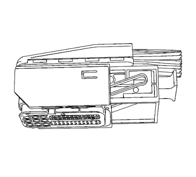
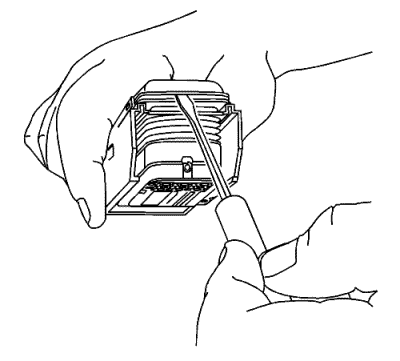
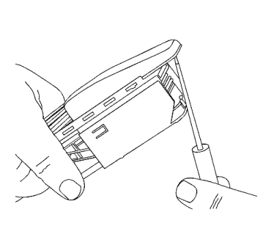
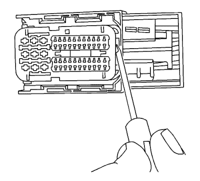
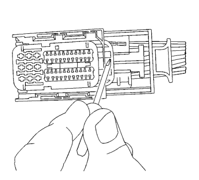
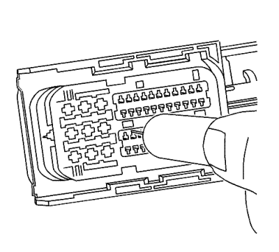

Conectores Kostal — Módulo de control de la bujía de incandescencia
Herramientas especiales
| • | EL-38125-580 Juego de herramientas de liberación de terminales |
| • | J-38125-24 Herramienta de desbloqueo de terminales |
| • | J-38125-560 Herramienta de desbloqueo de terminales |
Si desea informarse sobre herramientas regionales equivalentes, consultar Herramientas especiales .
Procedimiento de extracción de terminales

Visualización de un conector típico.

Visualización de un conector en posición de desbloqueo.
- Coloque la palanca de accionamiento en la parte de atrás del conector. Mueva la palanca de accionamiento hasta la posición trasera.
- Separe el conector del componente.

- Utilice una herramienta pequeña de hoja plana para retirar la cubierta de tela.

- Desplace la cubierta de tela hacia adelante y sepárela del conector.

- El seguro positivo del terminal (TPA) se encuentra en la parte delantera y trasera del conector.
Nota: El TPA delantero no puede extraerse desde el conector. Desplácelo únicamente a la posición preestablecida.
- Utilice una herramienta pequeña de punta plana para mover el TPA delantero a la posición predeterminada, unas 0,125 pulg. (3 mm) hacia fuera.

- Utilice una herramienta pequeña de hoja plana para quitar el TPA trasero del conector.

- Utilice la herramienta J-38125-24 o J-38125-560 para soltar los terminales introduciendo la herramienta en la cavidad de liberación de terminal.
- Mientras mantiene en su sitio la herramienta de desmontaje, retire con cuidado el cable de la parte trasera del conector. Recuerde siempre que nunca debe utilizar la fuerza a la hora de retirar un terminal de un conector.
- Repare el terminal siguiendo el procedimiento Reparaciones del terminal del conector : Reparación de Terminales → Reparación de cable con terminación .
| © Copyright Chevrolet Europe. All rights reserved |